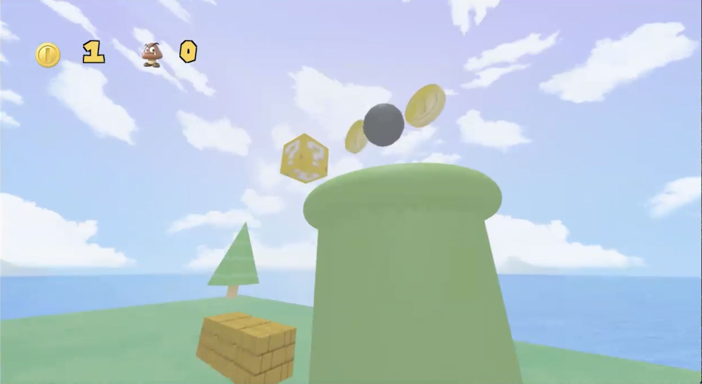

Abstract
Our final project, Super Mario Brothers 1st POV shooter, is a First Point of View interactive, 360 degree game render based on the popular video game Super Mario Brothers. Utilizing three.js and WebGL, we created a 360 degree game that allows the player (the camera) to move around with arrow keys, shoot at enemies, bricks, boxes, and coins, and see the amount of coins they have collected.
Technical Approach
We first initialized the graphics world for our game which included setting up the camera, scene, lighting, renderer, and our orbit controls for player movement. Then, we initialized our scene objects in the graphics world which included the coins, goomba enemies, trees, and flowers. Lastly, we initialized the physics world which included initializing the physics for objects using rigid bodies and implementing object detection using two techniques: raycasting and the Ammo.js dispatcher.
To implement first person movement and support 360 degree viewing, we implemented first person movement similar to most FPS (first person shooter) games, using the WASD keys as well as the spacebar to jump. For looking around, we utilized pointerLockControls and OrbitControls to get the player looking where the mouse is pointed. The player is the camera and we rotated the camera according to where the mouse is pointing.
To implement the shooting functionality, we initialized the aforementioned physics world to store data related to the ray-tracing and physical properties of each bullet. Then, we Initialized a MouseDown function that recognizes the event in which a player clicks the mouse button. Next, on each mouse click, we instantiate a ball and give it a rigid body. Lastly, we shoot a ray into the scene where the mouse is pointing to get the direction where we want to shoot out the sphere.
To implement collision detection, we implemented two types of collision detection. One way is using the Ammo javascript framework to calculate when an object collides. This algorithm works by iterating through all of the scene objects and calculating the distance between them, using a cache to speed up the process. More specifically, we first calculated the number of contact manifolds (cache of contact points between pairs of collision objects). Then, we iterated through the cache to get individual contact manifolds. Next, we iterated through each contact manifold to get the contact point (intersection point between two objects). Lastly, we calculated the distance between two contact points. For the raycasting approach within the Three.js framework, we send a ray into the scene in the direction the camera is pointing, raycaster.setFromCamera(mouseCoords, camera). Then, we iterate through all of the objects that it hit, picking any relevant objects. We can tell if an object is colliding based on distance from the camera.
Problems Encountered
One of the earliest challenges we encountered was getting acquainted with the Javascript language and the Three.js framework. To combat this issue, we thoroughly read up on documentation, watched tutorials, and reviewed core class concepts so that we would have an easier time understanding the syntax of Three.js.
One of the earliest problems included setting up the scene to incorporate the physics world. Though we had initialized the graphics world with bricks, power up boxes, coins, and other objects, we were unable to figure out how to tackle the physics of these 3D objects. To solve this problem, we had to refactor our code to create a physics world that would then initialize our scene objects from the graphics world.
Another problem we encountered was figuring out how to shoot the spheres out and have them hit our objects. To solve this, we implemented the physics for the spheres so that we were able to control their masses and velocities. Then, we implemented object detection using ray tracing and the Ammo.js approach so that we would know what exactly has been hit. Then, we implemented object detection so that we can appropriately calculate how the sphere’s mass and velocity will affect the appropriate object.
Lessons Learned
The biggest lessons we’ve learned from this project is that we need to work in an organized, communicative manner. By communicating effectively and coordinating how each piece of the project will fit together, we learned that this was the best way to approach the project and prevent interdependencies before diving straight into coding the project. Another lesson we’ve learned is to not to underestimate the difficulty and scale of trying to create a game from scratch. After pivoting from our initial idea to utilize Unity3D, we learnt that building a game from nothing is incredibly ambitious and impossible without extreme planning and coordination.
On a technical level, we’ve learned to not only resolve Github merge conflicts but also how to utilize concepts from class such as Blinn-Phong shading, texture shading, point and ambient lighting, animation, object detection, and object detection to build a 3D game. Moreover, all of us had no prior experience working with the Three.js framework and with Javascript in general. We learnt that it was vital to research thoroughly on documentation, video tutorials, and external forums to build our foundational knowledge of the framework. Then, with this knowledge, we were able to expand this to work with other Javascript frameworks.
Results:
Final Presentation and Demonstration
Preliminary State

|

|

|
Final Images

|

|

|
Object Collision: Brick
Object Collision: Coin
|  |
References
- Ammo.js
- https://github.com/bulletphysics/bullet3/blob/master/docs/Bullet_User_Manual.pdf
- https://github.com/kripken/ammo.js/
- Three.js and WebGL renderer
- Assets
- Youtube Tutorials
- https://www.youtube.com/watch?v=6oFvqLfRnsU
- https://www.youtube.com/playlist?list=PLCTVwBLCNozSGfxhCIiEH26tbJrQ2_Bw3
- External Websites
Contributions
- Queenie Lau
- Graphics world design and object population, shooting functionality, object collision, object detection
- Dakshina Palasamudrum
- Graphics world design and object population
- Neel Choudhary
- Physics world initialization, shooting functionality
- Justin Radatti
- Graphics and physics world initialization, object collision, object detection, object breaking,player movement, shooting functionality,rigid bodies